Как читать аукционный лист
Аукционный лист (или «аукционник») — главный документ японских автоаукционов. В нем фиксируются техническое состояние, комплектация, пробег, оценка и повреждения автомобиля. Расшифровка аукционного листа позволяет точно понять, что именно вы приобретаете. Мы предлагаем профессиональную расшифровку аукционного листа из Японии на русском языке с учетом всех нюансов и обозначений разных аукционов.
Узнать больше об аукционных листах
Ниже предоставлены образцы аукционных листов
Аукционный лист CAA
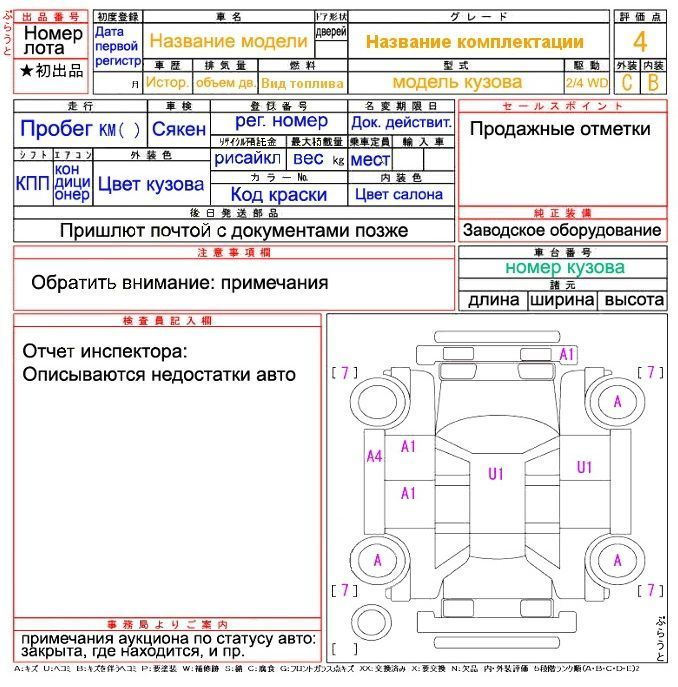
Аукционный лист USS
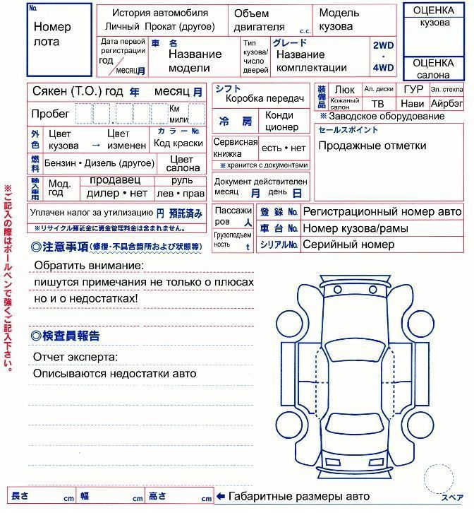
Аукционный лист HAA
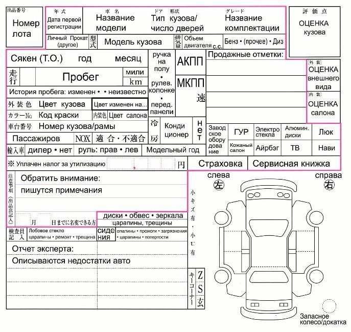
Аукционный лист JU
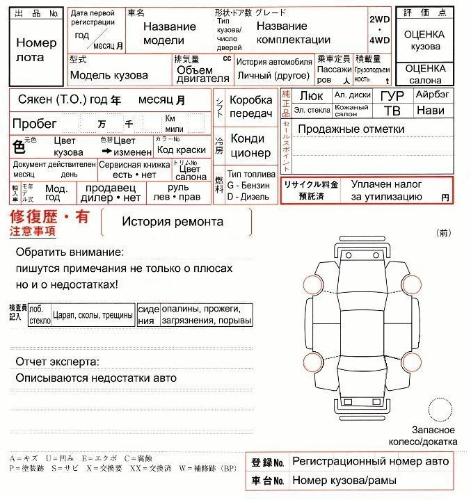
В документе всегда указываются номер лота, пробег, история, год регистрации, комплектация, цвет кузова и салона, а также список опций. После осмотра эксперт присваивает общую оценку состояния по пяти- или шестибалльной шкале. Высший балл получают новые авто, низший — аварийные или утопленные. Обозначения "RA" или "***" указывают на серьезный ремонт или сильные повреждения. Кроме того, в листе отдельно оценивают салон и иногда кузов по буквенной шкале от A (отличное состояние) до D (требуется ремонт). На схеме кузова отмечаются все дефекты — буквы обозначают тип повреждения, цифры — его степень. Важно помнить, что системы оценки могут отличаться на разных аукционах, поэтому правильно читать такой документ особенно важно. Лучше уточняйте детали у Вашего менеджера.
Общая оценка кузова
Ниже представлена таблица с расшифровкой оценок, применяемых на большинстве крупных аукционных площадок Японии.
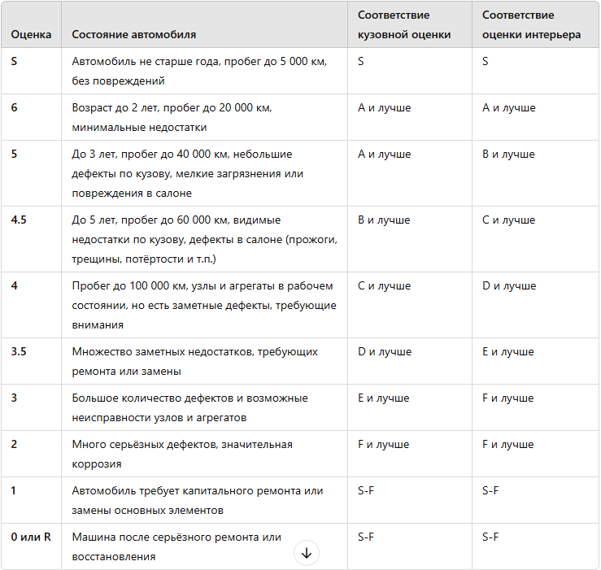
Оценка состояния кузова и интерьера
Помимо общей аукционной оценки, японские аукционы отдельно выставляют оценки за состояние кузова и салона. Это позволяет покупателям более детально оценить состояние автомобиля и заранее понимать, какие вложения могут потребоваться.
Кузов
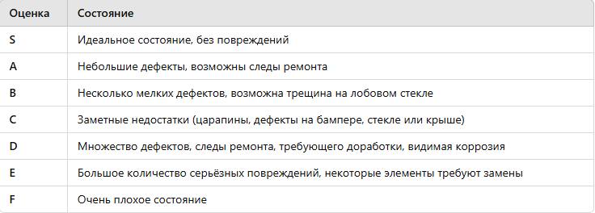
Интерьер
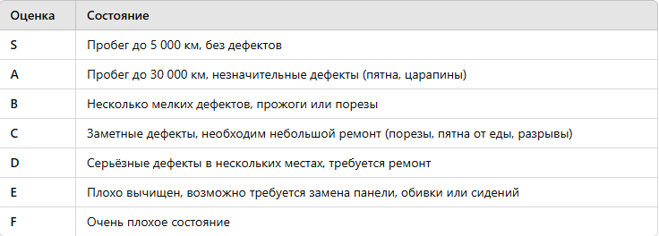
Такой формат оценки помогает быстро понять, в каком состоянии находятся внешний вид и салон автомобиля, а также оценить будущие расходы на косметический ремонт.
Символы повреждений на аукционных листах: расшифровка
Царапины, вмятины и состояние ЛКП
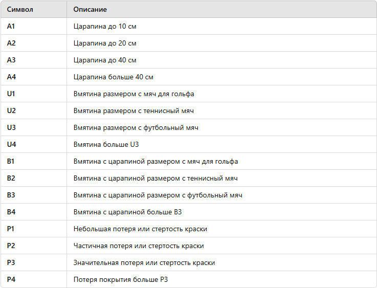
Восстановление, коррозия, стекла и замена
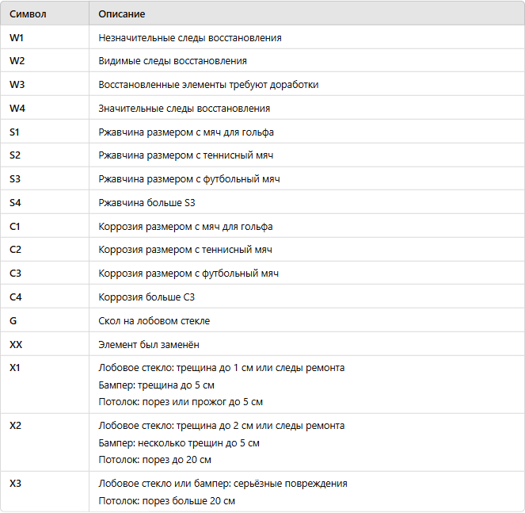
Расшифровка некоторых сокращений, встречающихся на аукционном листе
Коробка передач и тип привода
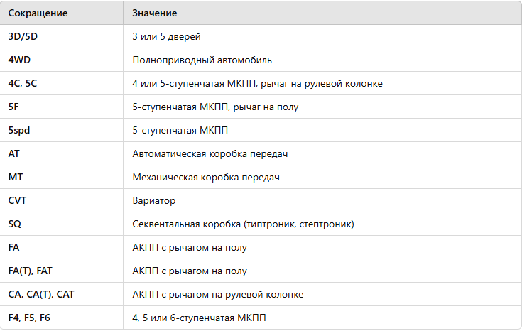
Оборудование и опции
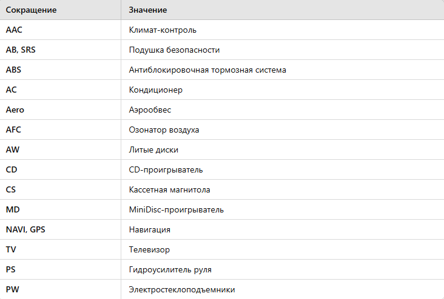
Кузов, безопасность, дополнительное оснащение
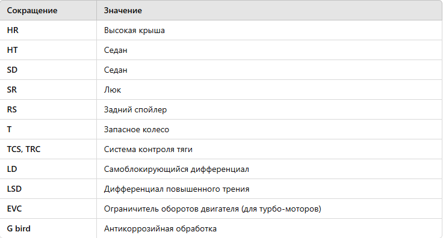
Перевод аукционного листа
Расшифровка и перевод аукционного листа из Японии на русском языке — залог уверенности в покупке. Этот документ может показаться сложным, особенно тем, кто сталкивается с ним впервые. Но не переживайте — наш опытный специалист быстро и точно выполнит расшифровку аукционного листа автомобиля, объяснит детали и поможет оценить реальное состояние автомобиля до покупки.
Назад